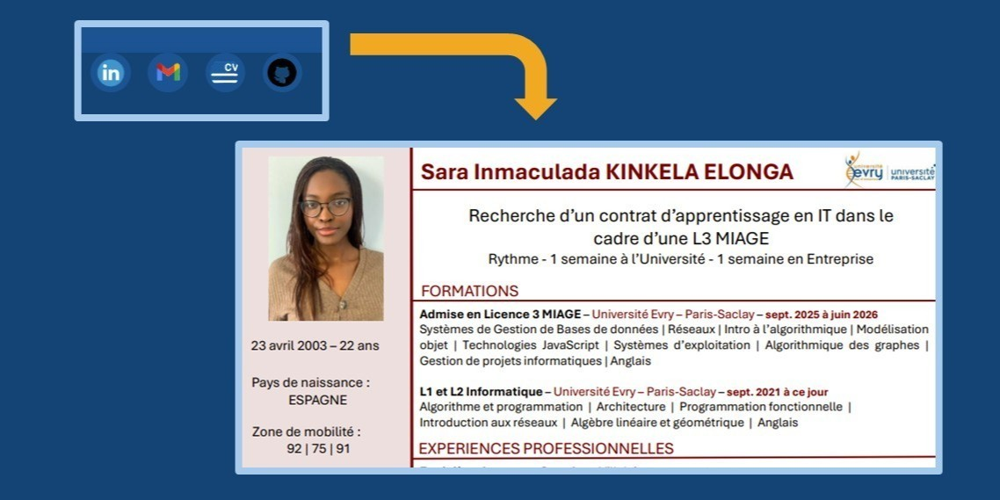

Je suis Sara et je suis admise en L3 MIAGE par apprentissage. Je cherche donc activement une alternance pour septembre 2025 d'une durée de un an, et de rythme une semaine en entreprise et une semaine à l'université. Mon portfolio a pour but de vous apprendre un peu plus sur moi, à travers mes différents projets faits à l'université et mes réalisations. Je vous laisse donc voir l'organisation de mon portfolio.
 Ici vous pouvez consulter mes liens comme mon cv. Je vous invite à être curieux.
Ceci sont mes projets, le plus récent étant la mairie
 Finalement, mes autres réalisations, ces sont des projets moins accés sur la programmation mais
que je trouve intéressants, si vous voulez plus me connaître
Finalement, mes autres réalisations, ces sont des projets moins accés sur la programmation mais
que je trouve intéressants, si vous voulez plus me connaître
Je suis Sara et je suis admise en L3 MIAGE par apprentissage. Je cherche donc activement une alternance pour septembre 2025 d'une durée de un an, et de rythme une semaine en entreprise et une semaine à l'université. Mon portfolio a pour but de vous apprendre un peu plus sur moi, à travers mes différents projets faits à l'université et mes réalisations. Je vous laisse donc voir l'organisation de mon portfolio.